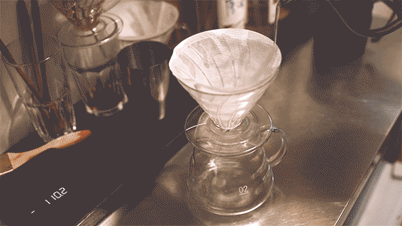
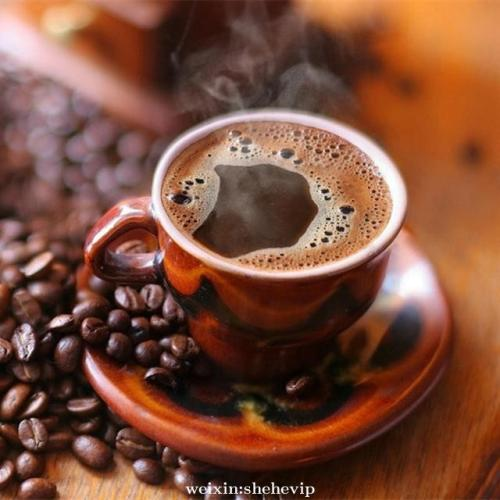
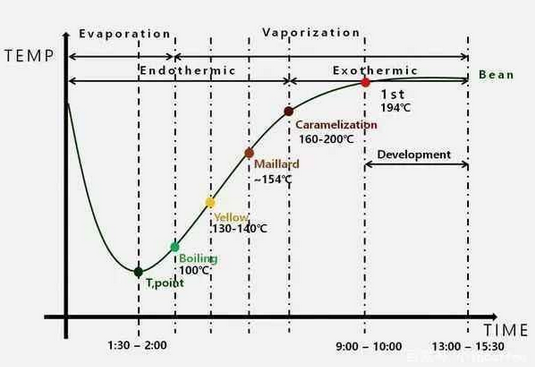

咖啡烘焙
Coffee Roasting
在咖啡产业里，烘焙是最吸引人的一个环节。 咖啡生豆几乎毫无风味可言，直接品尝有一股颇令人不悦的蔬菜味， 但经过烘焙后的转变为难难以置信的、带着芳香而又复杂的咖啡豆。
在咖啡产业里，烘焙是最吸引人的一个环节。咖啡生豆几乎毫无风味可言， 直接品尝有一股颇令人不悦的蔬菜味，但经过烘焙后的转变为难难以置信的、 带着芳香而又复杂的咖啡豆。新鲜烘焙的咖啡豆气味会让人精神为之一振， 喝起来非常美味。
关于相对较低品质咖啡豆的商用烘焙已有非常多的研究， 其中大多数是关于烘焙流程的效率以及如何制造速溶咖啡的方法。 由于这些低质量咖啡较缺乏有趣的风味， 关于如何发展出咖啡的甜味或是保留来自特定风土条件或特定品种的独特风 味等方面的研究就很少了。
总的来说，全世界的精品咖啡烘焙商都靠自我训练， 其中许多人通过不断地试错而学习到精品咖啡交易的精髓。 不同的咖啡烘焙商有各自的风格、美学理念或烘焙哲学， 他们十分清楚如何重现自己想要的咖啡质量，但是他们不见得了解烘焙的全貌， 因此要烘焙出不同的风格可能有困难。这并不代表美味又妥善烘焙的咖啡熟豆难以寻求： 在世界上任何一个国家几乎都可以找到这样的咖啡，未必能够烘出更棒的咖啡豆， 因为当前仍有许多值得探索与发展的烘焙技巧。
快或慢？浅或深？
简言之，咖啡的烘焙其实指的就是咖啡豆最后的颜色烘到多深（浅烘或深烘）、 花了多久时间（快炒或慢炒）。轻描淡写地说某种咖啡是浅焙是不够的， 因为这种咖啡可能是快炒也可能是慢炒，不同的烘焙速度会有截然不同的风味表现， 而咖啡豆的颜色看起来却十分相近。
咖啡烘焙时，会发生一连串不同的化学反应，其中许多反应会让重量减少，当然也造成水分的流失。 慢炒（14~20分钟完成烘焙）会有较高的失重比（约16%~18%），快炒最快可以在90秒内完成， 对一相对较昂贵的咖啡而言，采用慢炒的方式会有更好的风味发展。
烘焙过程中，有三个决定咖啡最后风味的要素必须控制得当：酸味、甜味和苦味。 一般而言，总烘焙时间越久，最后留下的酸味就越少， 相反的，苦味则随着越长时间的烘焙而越强，越深的咖啡会越苦。
甜味的发展是呈现钟型曲线状，介于酸味与苦味高峰的中间， 好的咖啡烘焙商知道如何让咖啡豆达到每个烘焙度里最高的甜蜜点。 但是不论是使用让酸甜程度皆强的烘法，或是另一种让甜度极高酸度却相对较弱的烘法， 如果你是使用质量差的咖啡豆，调整烘焙手法可能也无济于事。
不同的烘培阶段
烘焙时有许多关键阶段，一份咖啡豆用多快的速度经历各个阶段，即是一般所称的烘焙模式 （ roast profile）。许多烘焙者会仔细写下各次烘焙记录， 让每一次烘焙能够以及小的温度与时间误差值得以重现。
第一阶段：去除水分
咖啡豆含有7%~11%的水分，均匀分布于整颗咖啡豆的紧密结构中， 水分较多时咖啡豆不会变成褐色。这就与制作料理时让食物褐化的道理一样。 将咖啡生豆倒入烘豆机之后，需要一些时间让咖啡豆吸收足够的热量以蒸发多余的水分， 因此这个阶段需要大量的热量。开始的几分钟内，咖啡豆的外观以及气味没有什么显著变化。
第二阶段：转黄
多余的水分被带出咖啡豆后，褐化反应的第一阶段就开始了。这个阶段的咖啡豆结构仍然非常紧实且带有类似印度香米及烤面包似的香气。 很快地，咖啡豆开始膨胀，表层的银皮开始脱落，被烘豆机的抽风装置排到银皮收集桶中，桶内的银皮会清除到别处，避免造成火灾。 前两个阶段非常重要：例如咖啡生豆的水分没有恰当地去除，往后的烘焙阶段就无法达到均匀的烘焙。即使咖啡豆的外表看起来没事， 内部可能没熟透，冲煮后的风味十分令人不悦，会有咖啡豆表面的苦味，以及豆芯未发展完全的尖锐酸味及青草味。过了这个阶段之后， 即使放慢烘焙的速度也难以挽救，因为同一颗豆子不同部分的发展速率会不同。
第三阶段：第一爆
当褐化反应开始加速，咖啡豆内开始产生大量的气体（大部分是二氧化碳）及水蒸气。当内部的压力增加太多时，咖啡豆开始爆裂，发出清脆的声响，同时膨胀将近两倍。从这个时候，我们熟知的咖啡风味开始发展，烘豆师可以自行选择何时结束烘焙。 烘豆师会发现，如果给予相同的火力，温度上升的速度会减缓，如果热能过低，可能导致烘焙温度停滞，造成咖啡风味呆钝。
第四阶段：风味发展阶段
第一爆结束后，咖啡豆便面会看起来较为平滑，但仍有少许皱褶。这个阶段决定了最终咖啡上色的深度以及烘焙的实际深度，烘豆师须拿捏最后熟豆产品要呈现的酸味与苦味，烘得越久，苦味就越高。
第五阶段：第二爆
到这个阶段，咖啡豆再次出现爆裂声，不过声音较细微且更密集。咖啡豆一旦烘焙到第二爆，内部的油脂更容易被带到豆表，大部分的酸味会消退并产生另一种新的风味，通常称之为“烘焙味”。这种风味不会因为豆子种类不同而有差异，因为其成因是来自炭化或焦化的作用，而非内部固有的风味成分。
将咖啡豆烘得比第二阶段更深的程度是很危险的，有时可能导致火灾，特别是在使用大型商用烘豆机时更是需要注意。 咖啡烘焙领域中有“法式烘焙”及“意式烘焙”等烘焙深度，指的都是烘焙到非常深的咖啡豆，有典型的高浓郁度、高度苦味，但大多数豆子本身的个性会消失。即便许多人喜欢重度烘焙的咖啡风味，但如果你想认识来自不同产地的高质量咖啡的风味以及个性，建议不要选择重度烘焙的豆子。
咖啡内的糖分
许多人在描述咖啡风味时会提到甜味，理解在烘焙时到底发生了哪些事才会产生这些天然的糖分是十分重要的。
咖啡生豆内含一定程度的单糖成分，虽然并非所有的糖类都有甜味，但这些单糖通常都有带甜味，在咖啡烘焙的温度催化下很容易起反应。一旦咖啡豆内的水分蒸发掉大部分之后，糖类就会与热开始产生许多不同的反应，有些会起焦糖化作用，造成某些咖啡豆出现焦糖似的调性。要特别提到的是，这些焦糖化作用后的糖类甜度会降低，最终转变为苦味的来源之一；另外有些糖类会与咖啡豆内的蛋白质作用，进行所谓的美拉德反应（Maillard Reactions），这种反应涵盖了包括肉类在烤箱内转变成褐色的现象以及烘焙可可豆或咖啡豆时的变色现象。
当咖啡完全通过第一爆的阶段时，单糖几乎完全不存在了，他们可能都参与了各种不同的化学反应，最后转变成更多不同的咖啡芳香合物。
咖啡内的酸成分
咖啡豆内有许多种类的酸味，有些尝起来讨喜，有些则不美味。对烘豆师而言最重要的一种酸是绿原酸（chlorigenic acids,简称CGAs）。烘焙咖啡时，关键目标之一就是完全去除不美味的酸，同时避免制造出更多负面的风味因子，保留更多讨喜的芳香成分。另外有些酸在烘焙完成之后仍然保持稳定的状态，例如奎宁酸（quinic acid），会增添讨喜、干净的咖啡风味质感。
 咖啡内的芳香化合物
大多数咖啡内的香气来自咖啡烘焙时的三大反应群之一：美拉德反应、焦糖化反应以及斯特雷克降解反应（Strecker degrdation，另一种与氨基酸有关的反应）。这些反应群都在咖啡烘焙时受热而催化，最后产生超过800种不同的易挥发芳香化合物（aromatic compound ），这就是咖啡风味的来源。
虽然关于咖啡的芳香化合物种类在记录上比起葡萄酒多出许多，但是一种咖啡豆仅会同时拥有部分芳香化合物。这让许多想以人工方式合成近似新鲜烘焙真实咖啡香气的尝试者，最后只能以失败收场。
烘焙模式图解

冷却咖啡豆
冷却咖啡豆
烘焙完成之后，必须快速将咖啡豆冷却，以免过度烘焙或是让咖啡豆发展出负面的风味，如焙烤味（baked）。在小批量的烘豆机中，会使用冷却盘进行抽风降温；大批量的烘豆机则无法单单靠空气冷却咖啡豆，必须搭配雾化的水汽，水汽遇热蒸发后就能快速地带走热能。操作得宜时不会导致负面的风味；但如果操作不慎，咖啡豆老化的速度会略微加快。不幸的是，许多公司操作这种冷却方式时都加了过多水雾，因为他们想借由增加熟豆的重量以增加收入，这不但不道德，也对咖啡的质量产生非常不好的影响。